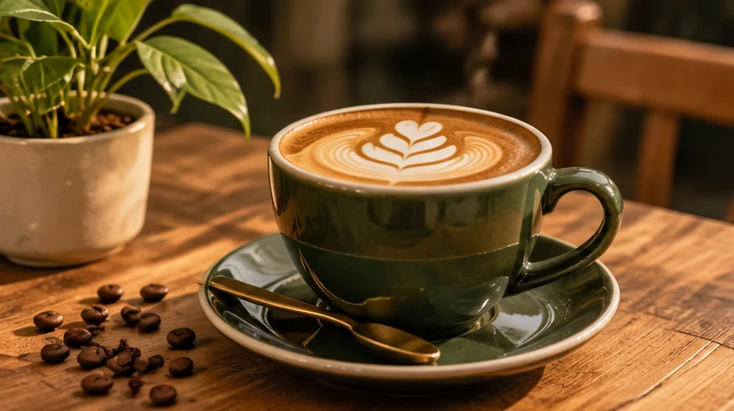
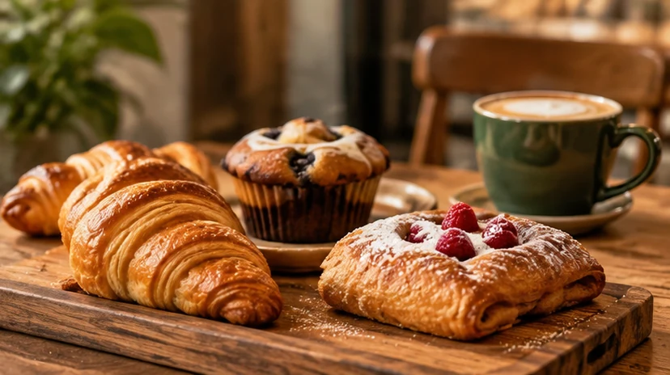

Latte de la casa
Espresso doble y leche texturizada.
CAFÉ DE ORIGEN · MIRAFLORES
Café peruano seleccionado, pastelería artesanal y un espacio cálido para reconectar con lo que importa.


Hecho con dedicaciónBIENVENIDO A NATIVA
Creemos que las mejores conversaciones empiezan alrededor de una taza.
Seleccionamos cafés peruanos, preparamos cada bebida al momento y acompañamos la experiencia con pastelería artesanal. Queremos que cada visita tenga su propio ritmo y se convierta en una pausa que valga la pena.
Conoce nuestra historiaHECHO PARA DISFRUTAR
Una selección de sabores que puedes descubrir en tu próxima visita.
Espresso doble y leche texturizada.

Masa suave, canela y glaseado ligero.
Notas limpias y preparación al momento.

DE LA SEMILLA A LA TAZA
Conoce un poco más sobre el mundo del café y nuestro pequeño ritual de preparación.
TE ESPERAMOS
Revisa nuestros horarios, encuentra la dirección y ven a disfrutar de Nativa.